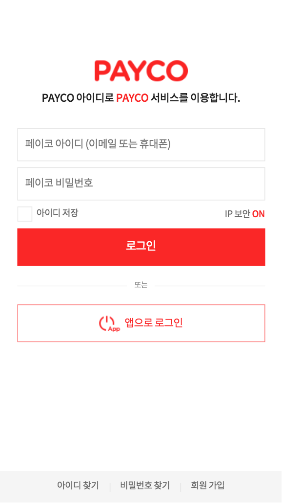

PAYCO 로그인/회원
페이코 로그인/회원 화면
작업기간 : 2017. 06 ~ 2017. 12
리얼 : 페이코 로그인
마크업 산출물 : 인덱스
크로스브라우징 : ie9 이상 ~ 모던 브라우저. PC/모바일 대응
사이트 소개 : 페이코 서비스를 이용하게될때 자주 보게되는 로그인 화면 및 회원 정보 관리 화면.
반응형은 아니지만 body에 m 클래스 유/무로 마크업 한벌로 피씨와 모바일을 구분하여 대응한다.
이 전에는 거의 프로모션 업무만 주로 맡아 진행하다가 운영 업무를 처음 진입하며 맡게 된 업무였다.
UIO 가이드도 처음 정리 해 보며, 페이코 로그인 화면이 특히 다른 사이트 및 앱 내에서 열리는 경우가 많은 페이지라 더 다양한 이슈 및 버그 대응이 필요했기 때문에 성장에 많은 도움이 되었던 프로젝트였던 것 같다.
